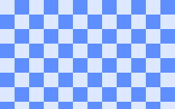

Single-line flex, isolated opacity, 2D transforms, raster images, and SVG now travel through one display list.

Basis, grow, shrink, gap, alignment, and main-axis distribution.
The whole card composites once rather than multiplying child alpha.
Translate, scale, rotate, and matrix metadata stay attached to paint.